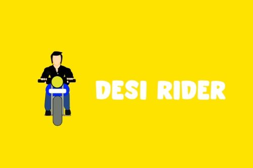

Desi Rider is an infinite-runner motorcycle game set on the streets of Indian cities. The player weaves through traffic jams, barricades and narrowing roads, collecting perks and avoiding obstacles to beat their previous high score.
A damage meter shows how much more punishment the bike can take, and the round ends when it reaches its limit. Medical kits picked up along the way repair damage, but only within the current round.
The game is an exaggerated take on riding through Indian metro traffic, where constant roadworks and congestion make every commute a challenge. As a rider myself, I wanted it to carry a quiet point about rider safety.
How it is built
- A game manager driving gameplay states: started, playing, paused and game over.
- Sideways steering from the phone's accelerometer.
- A vehicle damage and repair system.
- A UI manager controlling every on-screen element.
It is distributed on Google Play as an Android App Bundle, so each device downloads only the resources for its own screen size.
Details
- Role
- Producer, UI and gameplay design, development in Unity3D and C#
- Dates
- June 2019 onward
- Links
- Google Play · desiridergame.com